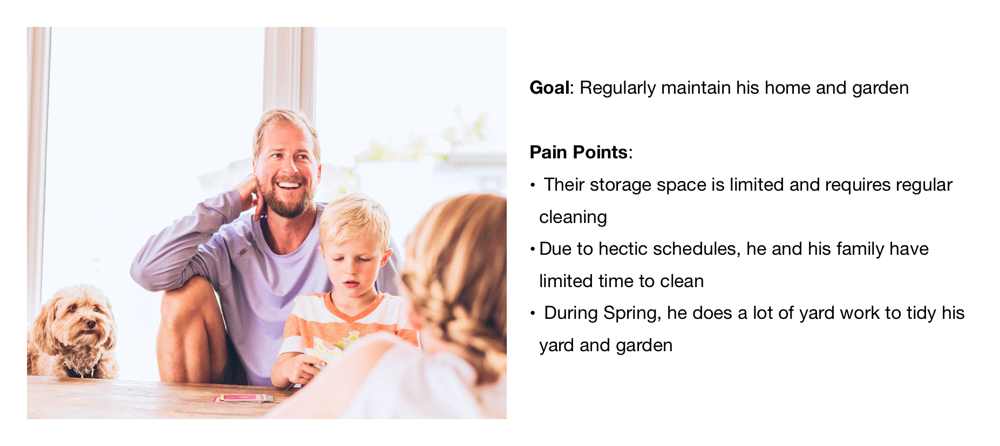
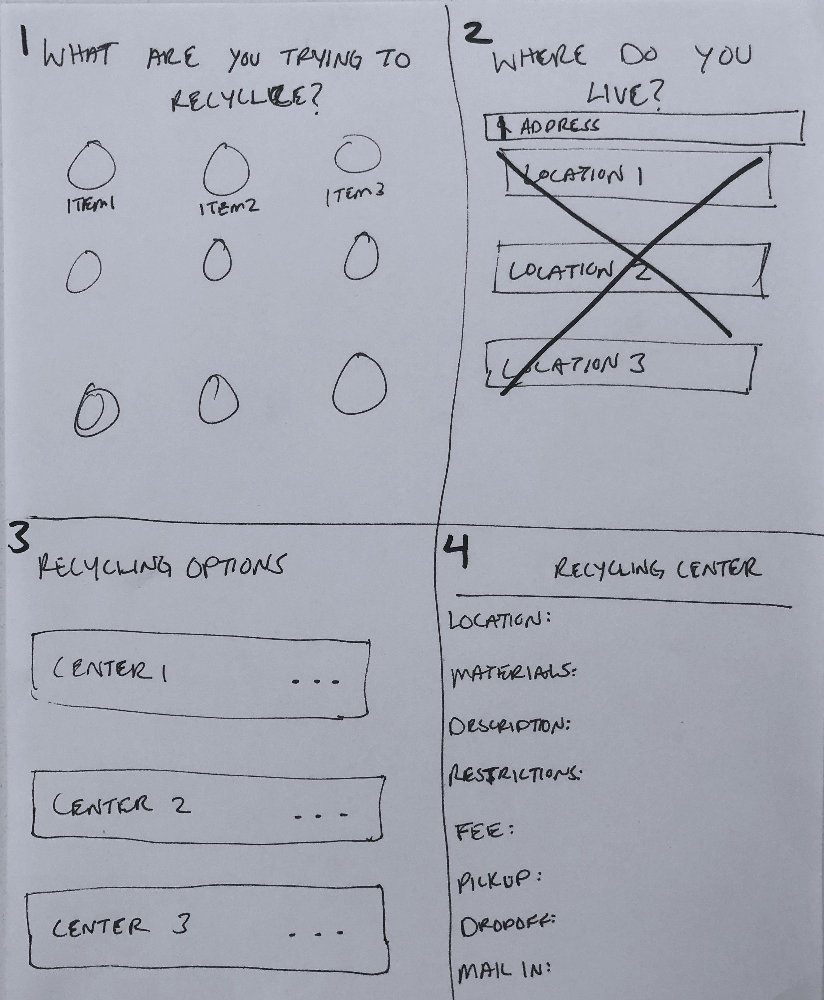
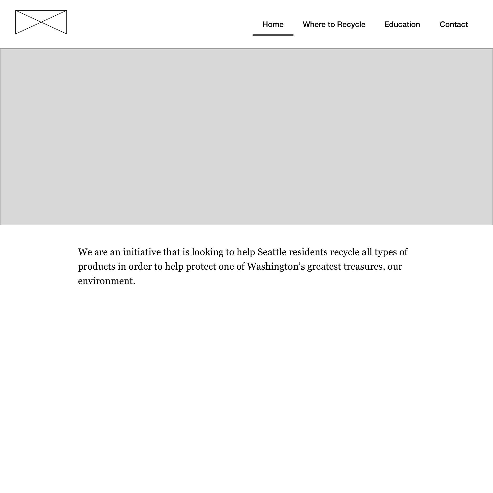
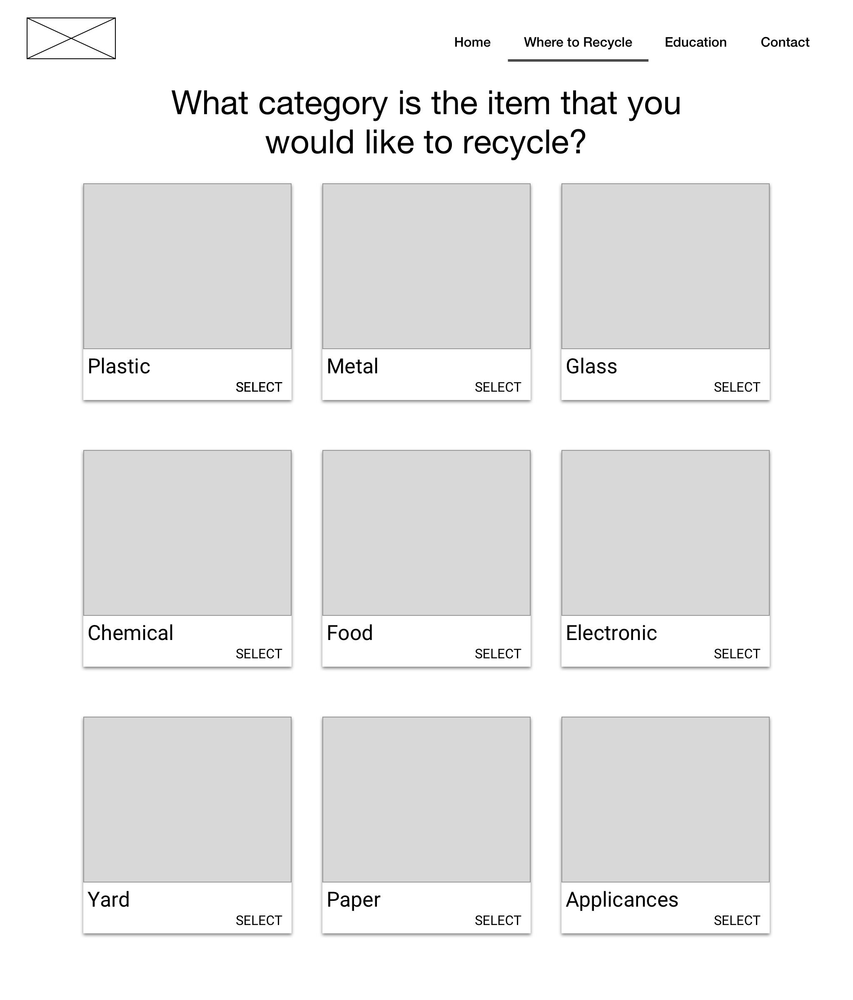
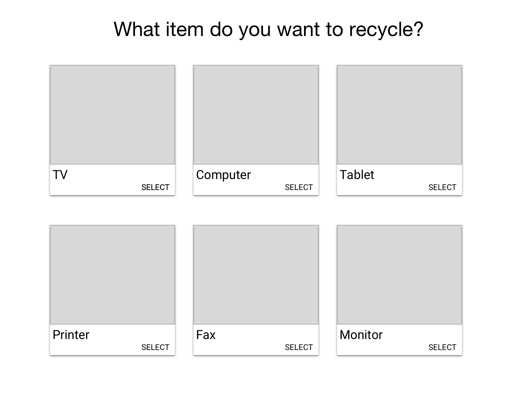
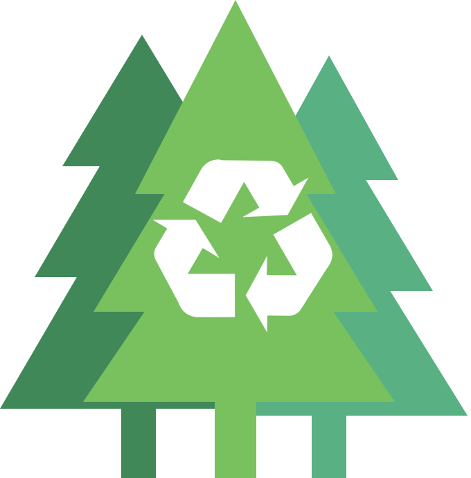
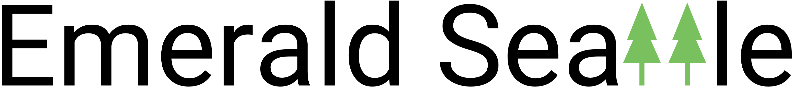

Recycle center locator to help keep our city emerald/p>
Project Brief: The city of Seattle is looking for a product that will help to solve a local civic problem.
City of Seattle
Pen & Paper, Whiteboard, Sketch, Keynote
1 day
Working Prototype, Presentation
2 engineers, 2 designers
Interaction, Visual Designer, Project Manager
During this hackathon project, I took the lead as project manager after coming up with the idea that we selected. I led the UX team in terms of information architecture, interaction design, visual design. I created the initial sketches and low fidelity wireframes for our developers. I also created the Emerald Seattle branding and presented the MVP for the mayor’s office of Seattle.
We did an informational interview with one person in Seattle that had experience with wanting to recycle different items from their home. We gathered their pain points and quickly created a proto-persona to design for.
Context Scenario: Steve Jones lives with his family in Ballard that he bought a few years ago. They regularly maintain and enjoy “spring cleaning” a couple of times a year, which can produce a lot of items for recycling. John wants to be able to recycle his household items in an environmentally friendly way, but doesn’t know how to find that information easily
The current process for Seattle residents to recycle can be onerous, which leads residents to throw items into the garbage instead of properly recycling them.
To make the recycling process for Seattle residents easy so that we can help reduce our waste as a part of our city’s Zero Waste Strategy, in which we are aiming to recycle 70% of our waste by 2022.
To respond to Steve’s pain points, I created our first sketches of what our app would look like and focused on the recycling guide for our users. I wanted to build an easy decision tree that would lead the user to the closest recycling center that handled the item they were looking to recycle. I quickly tested this with users and handed the design over to our dev team to start work.
I created low fidelity wireframes to continue refining the design for our users including interactive elements like modals.
  I developed a quick style guide that included the design for our logo and secondary logo. I wanted to use trees in the logo to tie to the “emerald city” of Seattle as well as the recycling sign to help inform our users. The secondary logo was made for presentation purposes. For the typography and style of the app, our developers were most comfortable with Material Design so I followed those standards for visual elements.
 With a prototype developed by our software engineers, I created a major task flow that would be completed by a user and used in our presentaiton. The user would land on our homepage that describes our mission. Then, the user would go to Guide page where they will be walked through how to recycle the item. From there, they click into the categories I created and select the specific item. They are then given a location entry form and provided with all the recycling centers that they can go to listed by distance from their location. Finally, clicking into the recycler provides the full details including restrictions and fees (if any) that they need to recycle.